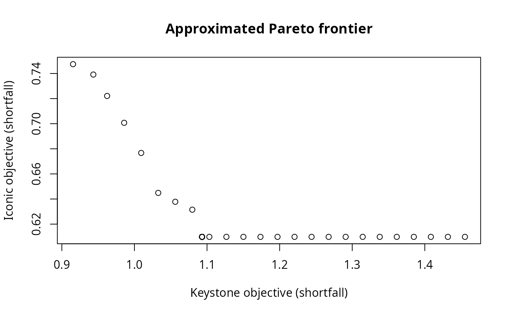

Add a hierarchical (lexicographic) approach for multi-objective optimization
to a multi-objective conservation planning problem (Jaimes et al. 2009).
Broadly speaking, this approach involves using multiple optimization
procedures to solve each problem() in a
multi_problem() object following a hierarchical (lexicographic) ordering,
wherein those associated with a higher priority order are solved before
those with a lower priority order. When implementing this approach,
constraints are added after generating a given solution to ensure that
subsequent solutions for lower priority problem() objects have
adequate performance according to higher priority problem() objects.
Arguments
- x
multi_problem()object.- rel_tol
numericvector or matrix denoting a set of the relative tolerance values for each constraint added during the hierarchical approach. For example, ifxhas two problems, then the hierarchical approach will involve adding one constraint and, in turn, require onerel_tolvalue. Alternatively, ifxhas three problems, then the hierarchical approach will involve adding two constraints and, in turn, require tworel_tolvalues. Given this, a vector can be used to specify a set of values for generating a single solution, where each value corresponds to a different constraint. Alternatively, a matrix can be used to specify multiple sets of values for generating multiple solutions, where each column corresponds to a different constraint and each row corresponds to a different solution. Theserel_tolvalues specify how much each objective can be degraded in subsequent optimization procedures (in other words, how much wiggle room is allowed when optimizing otherproblem()objects with a lower priority). Greaterrel_tolvalues denote a greater degree of sub-optimality (similar to thegapparameters in the solvers, such asadd_gurobi_solver()). For example, a value of 0 corresponds to zero reduction in quality, and a value of 0.05 allows for up to a 5% reduction in quality. In other words, if a problem inxwith the highestpriorityvalue had the minimum set objective (peradd_min_set_objective()), then the solution resulting from this approach would cost no more than 105% of the total cost associated with a solution that just involved minimizing cost (assuming that allproblem()objects inxhad the same constraints). See Details section below for more information.- priority
numericvector or matrix denoting the priority order for eachproblem()inx. A vector can be used to specify a set of values for generating a single solution, wherein each value corresponds to a differentproblem()inx. Alternatively, a matrix can be used to specify multiple sets of values for generating multiple solutions, wherein each column corresponds to a differentproblem()inxand each row corresponds to a different solution. Note thatpriorityandrel_tolmust have the same format (e.g., both must be a vector, or both must be a matrix). With thepriorityvalues,problem()objects inxthat are associated with a higher value will be optimized before those with a lower value. See Details section below for more information. Defaults toNULLsuch that eachproblem()inxis assigned a priority reflecting their order inx(i.e., the firstproblem()is assigned the highest priority value, and subsequentproblem()objects are assigned decreasing priority values).- verbose
logicalshould progress on generating multiple solutions be displayed? Defaults toTRUE.
Value
An updated multi_problem() object with the approach
added to it.
Details
This multi-objective optimization approach is especially useful when there
is a well-defined order of importance among objectives in a planning
exercise (Williams and Kendall 2017; Schuster et al. 2023).
In general, we recommend using this approach because it is highly
flexible and can better approximate the Pareto Frontier than alternative
approaches.
By specifying an explicit priority order for each objective
(per priority) and acceptable tolerances for degradation
(per rel_tol), the parameters for this approach
are highly transparent. Additionally, the approach
is not sensitive to differences in the range of values among
different objectives (unlike the weighted sum approach,
add_wtd_sum_approach(); see Das and Dennis 1997 for details), and so it
can be readily applied to a wide range of objectives.
The hierarchical approach involves solving the problem() objects
in x based on a pre-defined order of priority
(per priority).
In particular, it involves the following steps:
(i) the problem with the highest priority is selected (per priority);
(ii) a solution is generated to this problem;
(ii) the performance of the solution is measured
based on its ability to achieve the objective for this problem
(i.e., the objective value);
(iii) the objective value and the relative tolerance parameter for this
problem (per rel_tol) are used to constrain
subsequent optimization analyses (i.e., wherein a greater rel_tol value
means that subsequent solutions do not have to achieve such a good
level of performance according to the objective for this problem);
(iv) the problem with the next highest priority is selected (per priority);
(v) steps (ii) – (iv) are repeated until a solution has been generated
to the problem with the lowest priority (per priority); and
(vi) the solution obtained from solving the problem with the lowest priority
(per priority) is returned.
Note that any constraints specified for any of the
problem() objects in x will be considered during any of the
optimization analyses. For example, if x has three problem() objects and
the second problem has locked in constraints (per
add_locked_in_constraints(), then these constraints will be considered
when generating solutions to each of the three problems.
Additionally, if any of the problem() objects in x are based
on the minimum set formulation of the reserve selection problem
(per add_min_set_objective()), then the targets will be considered
when generating solutions to any of the problems in x. This is because
the targets in a minimum set formulation are treated as (hard) constraints,
and solutions must always meet them.
The priority and rel_tol parameters specify how much influence each
problem() in x has over the multi-objective optimization process.
For example, let's consider an example where x has three problems,
priority = c(2, 4, 1), and rel_tol = c(0, 0.2).
In this example, the second problem() in x will be optimized first
because it has the highest priority value (i.e., 4) .
After generating a solution to the second problem, subsequent optimization
analyses will be constrained to ensure that all subsequent solutions
perform no worse than optimality according to the objective
of the second problem (because the first rel_tol value is 0).
The first problem() in x will then be optimized next, because it has the
next highest priority value (i.e., 2).
After generating a solution based on the first problem, subsequent
optimization analyses will be constrained to ensure that all subsequent
solutions perform (i) no worse than optimality according to the objective
of the second problem (because the first rel_tol value is 0),
and (ii) no worse than a 20% reduction in performance according to the
objective of the first problem (because the second rel_tol value is 0.2).
Note that, because this new solution was generated with constraints
to ensure optimal performance according to the second problem,
this solution would likely have worse performance according to the objective
of the first problem than a solution that was generated by
solving the first problem directly.
The third problem() in x will be optimized next, because
it has the next highest priority value (i.e., 1).
Since the problems optimized previously had relatively low relative
tolerance parameters (i.e., 0 and 0.2), the performance of this new solution
according to the objective of the third problem would probably have much
worse than a solution that was generated by solving the third problem
directly.
Finally, the solution obtained by optimizing the third problem will be
returned as the resulting solution from the multi-objective optimization
approach.
Mathematical formulation
This approach can be expressed mathematically for a set of
objectives associated with the problem() objects in x.
Let \(O\) denote the set of objectives (indexed by \(o\)).
For brevity, we will assume that all of the objectives should ideally be
maximized and have been sorted in order of
priority (per priority), such that the objective with the highest priority
is \(o=1\), objective with the second highest priority is
\(o=2\), and so on.
Also, let \(f_o(x)\) denote the objective function for each
objective \(o \in O\), where \(x\) represents all the decision
variables for calculating the objective values (e.g., planning unit selection
status values).
Additionally, let \(r_o\) denote the relative tolerance (per
rel_tol) parameter for each objective \(o \in O\).
Furthermore, let \(S\) represent the set (region) of feasible
values for \(x\) based on the constraints for all of the objectives
(e.g., if the first problem in x has locked in constraints and the
second problem has locked out constraints, then \(S\) would
account for both the locked in and locked out constraints).
Given this terminology, the approach starts by solving the following
optimization problem based on the first objective.
$$ \mathit{Maximize} \space f_1(x) \\ \mathit{subject \space to \space} x \in S $$
After solving this problem, let \(v_1\) denote the optimal objective value for the solution. Next, the approach involves solving the following optimization problem based on the second objective, along with a constraint based on \(v_1\) and the relative tolerance parameter for the first objective (i.e., \(r_1\)). $$ \mathit{Maximize} \space f_2(x) \\ \mathit{subject \space to \space} x \in S \\ f_1(x) \geq v_1 \times (1 - r_1) $$
Similar to the previous step, let \(v_2\) denote the optimal objective value for the solution. The approach then involves solving the following optimization problem based on the third objective, along with constraints based on \(v_1\) and \(v_2\) and the relative tolerance parameters for the first and second objectives (i.e., \(r_1\) and \(r_2\)). $$ \mathit{Maximize} \space f_3(x) \\ \mathit{subject \space to \space} x \in S \\ f_1(x) \geq v_1 \times (1 - r_1) \\ f_2(x) \geq v_2 \times (1 - r_2) $$
In this manner, the approach involves iteratively formulating and solving optimization problems until all of the objectives \(o \in O\) have been considered. After a solution has been generated based on the last objective (i.e., lowest priority objective), then this solution is returned.
References
Das I and Dennis JE (1997) A closer look at drawbacks of minimizing weighted sums of objectives for Pareto set generation in multicriteria optimization problems. Structural Optimization, 14: 63–69.
Jaimes AL, Saúl ZM, and Coello Coello CA (2009) An introduction to multiobjective optimization techniques in Optimization in Polymer Processing. Eds Gaspar-Cunha A and Covas JA. Nova Science Publishers Inc, New York, United States.
Schuster R, Buxton R, Hanson JO, Binley AD, Pittman J, Tulloch V, La Sorte FA, Roehrdanz PR, Verburg PH, Rodewald AD, Wilson S, Possingham HP, and Bennett JR (2023) Protected area planning to conserve biodiversity in an uncertain future. Conservation Biology, 37: e14048.
Williams PJ and Kendall WL (2017) A guide to multi-objective optimization for ecological problems with an application to cackling goose management. Ecological Modelling, 343: 54-67.
See also
See approaches for an overview of all functions for adding an approach.
Other functions for adding multi-objective optimization approaches:
add_wtd_sum_approach()
Examples
# \dontrun{
# in this example, we aim to identify a set of planning units that will
# not exceed a particular budget and meet objectives for
# (i) representing species that are important for ecosystem
# functioning (hereafter, keystone species) and (ii) representing species
# that have high social or cultural value (hereafter, iconic species)
# import data
con_cost <- get_sim_pu_raster()
keystone_spp <- get_sim_features()[[1:3]]
iconic_spp <- get_sim_features()[[4:5]]
# define a total conservation budget (30% of total cost)
budget <- terra::global(con_cost, "sum", na.rm = TRUE)[[1]] * 0.3
# define a single-objective problem for the keystone species objective
p1 <-
problem(con_cost, keystone_spp) %>%
add_min_shortfall_objective(budget) %>%
add_relative_targets(0.4) %>%
add_binary_decisions()
# define a single-objective problem for the iconic species objective
p2 <-
problem(con_cost, iconic_spp) %>%
add_min_shortfall_objective(budget) %>%
add_relative_targets(0.45) %>%
add_binary_decisions()
# solve the single-objective problems
s1 <-
p1 %>%
add_default_solver(verbose = FALSE) %>%
solve()
s2 <-
p2 %>%
add_default_solver(verbose = FALSE) %>%
solve()
# plot the solutions to the single-objective problems
plot(s1, main = "Keystone species", axes = FALSE)
 plot(s2, main = "Iconic species", axes = FALSE)
plot(s2, main = "Iconic species", axes = FALSE)
 # now we will a create multi-objective problem that simultaneously
# considers both of these objectives
# the first objective for keystone species will have a higher order of
# priority than the second objective for iconic species -- because
# the long-term persistence of iconic species depends on ecosystem
# functioning -- and we will specify a very small relative tolerance
# parameter so that the solution has a relatively high performance according
# to the first objective (i.e., relatively low representation shortfalls for
# keystone species)
mp1 <-
multi_problem(keystone_obj = p1, iconic_obj = p2) %>%
add_hier_approach(
rel_tol = c(0.01),
priority = c(2, 1),
verbose = FALSE
) %>%
add_default_solver(verbose = FALSE)
# solve multi-objective problem
ms1 <- solve(mp1)
# plot solution to multi-objective problem
plot(ms1, main = "multi-objective solution", axes = FALSE)
# now we will a create multi-objective problem that simultaneously
# considers both of these objectives
# the first objective for keystone species will have a higher order of
# priority than the second objective for iconic species -- because
# the long-term persistence of iconic species depends on ecosystem
# functioning -- and we will specify a very small relative tolerance
# parameter so that the solution has a relatively high performance according
# to the first objective (i.e., relatively low representation shortfalls for
# keystone species)
mp1 <-
multi_problem(keystone_obj = p1, iconic_obj = p2) %>%
add_hier_approach(
rel_tol = c(0.01),
priority = c(2, 1),
verbose = FALSE
) %>%
add_default_solver(verbose = FALSE)
# solve multi-objective problem
ms1 <- solve(mp1)
# plot solution to multi-objective problem
plot(ms1, main = "multi-objective solution", axes = FALSE)
 # we will explore trade-offs between the two objectives, by generating
# multiple solutions using multi-objective optimization
# create a matrix with 40 different combinations of relative tolerance values
# that can be used to generate 40 solutions
rel_tol_matrix <- matrix(seq(0, 1, length.out = 40), ncol = 1)
colnames(rel_tol_matrix) <- "keystone_obj"
# preview matrix with relative tolerance values
head(rel_tol_matrix)
#> keystone_obj
#> [1,] 0.00000000
#> [2,] 0.02564103
#> [3,] 0.05128205
#> [4,] 0.07692308
#> [5,] 0.10256410
#> [6,] 0.12820513
# create a matrix with priority values, and this will matrix will
# simply assign priority value of 2 for the keystone objective
# and a value of 1 for the iconic objective
priority_matrix <- matrix(c(2, 1), ncol = 2, nrow = 40, byrow = TRUE)
colnames(priority_matrix) <- c("keystone_obj", "iconic_obj")
# preview matrix with priority values
head(priority_matrix)
#> keystone_obj iconic_obj
#> [1,] 2 1
#> [2,] 2 1
#> [3,] 2 1
#> [4,] 2 1
#> [5,] 2 1
#> [6,] 2 1
# create a multi-objective problem with the matrix of relative tolerance
# values
mp2 <-
multi_problem(keystone_obj = p1, iconic_obj = p2) %>%
add_hier_approach(
rel_tol = rel_tol_matrix,
priority = priority_matrix,
verbose = FALSE
) %>%
add_default_solver(verbose = FALSE)
# solve multi-objective problem and generate 40 solutions
ms2 <- solve(mp2)
# extract objective values for the solutions
obj_matrix <- attributes(ms2)$objective
# preview the objective values
head(obj_matrix)
#> keystone_obj iconic_obj
#> solution_1 0.9154189 0.7474219
#> solution_2 0.9433804 0.7391466
#> solution_3 0.9623635 0.7221113
#> solution_4 0.9858358 0.7007162
#> solution_5 1.0093080 0.6767033
#> solution_6 1.0327803 0.6448832
# plot the objectives values to visualize the approximated Pareto frontier
# (note that smaller values are better because these objectives seek to
# minimize representation shortfalls)
plot(
obj_matrix,
main = "Approximated Pareto frontier",
xlab = "Keystone objective (shortfall)",
ylab = "Iconic objective (shortfall)"
)
# we will explore trade-offs between the two objectives, by generating
# multiple solutions using multi-objective optimization
# create a matrix with 40 different combinations of relative tolerance values
# that can be used to generate 40 solutions
rel_tol_matrix <- matrix(seq(0, 1, length.out = 40), ncol = 1)
colnames(rel_tol_matrix) <- "keystone_obj"
# preview matrix with relative tolerance values
head(rel_tol_matrix)
#> keystone_obj
#> [1,] 0.00000000
#> [2,] 0.02564103
#> [3,] 0.05128205
#> [4,] 0.07692308
#> [5,] 0.10256410
#> [6,] 0.12820513
# create a matrix with priority values, and this will matrix will
# simply assign priority value of 2 for the keystone objective
# and a value of 1 for the iconic objective
priority_matrix <- matrix(c(2, 1), ncol = 2, nrow = 40, byrow = TRUE)
colnames(priority_matrix) <- c("keystone_obj", "iconic_obj")
# preview matrix with priority values
head(priority_matrix)
#> keystone_obj iconic_obj
#> [1,] 2 1
#> [2,] 2 1
#> [3,] 2 1
#> [4,] 2 1
#> [5,] 2 1
#> [6,] 2 1
# create a multi-objective problem with the matrix of relative tolerance
# values
mp2 <-
multi_problem(keystone_obj = p1, iconic_obj = p2) %>%
add_hier_approach(
rel_tol = rel_tol_matrix,
priority = priority_matrix,
verbose = FALSE
) %>%
add_default_solver(verbose = FALSE)
# solve multi-objective problem and generate 40 solutions
ms2 <- solve(mp2)
# extract objective values for the solutions
obj_matrix <- attributes(ms2)$objective
# preview the objective values
head(obj_matrix)
#> keystone_obj iconic_obj
#> solution_1 0.9154189 0.7474219
#> solution_2 0.9433804 0.7391466
#> solution_3 0.9623635 0.7221113
#> solution_4 0.9858358 0.7007162
#> solution_5 1.0093080 0.6767033
#> solution_6 1.0327803 0.6448832
# plot the objectives values to visualize the approximated Pareto frontier
# (note that smaller values are better because these objectives seek to
# minimize representation shortfalls)
plot(
obj_matrix,
main = "Approximated Pareto frontier",
xlab = "Keystone objective (shortfall)",
ylab = "Iconic objective (shortfall)"
)

# }